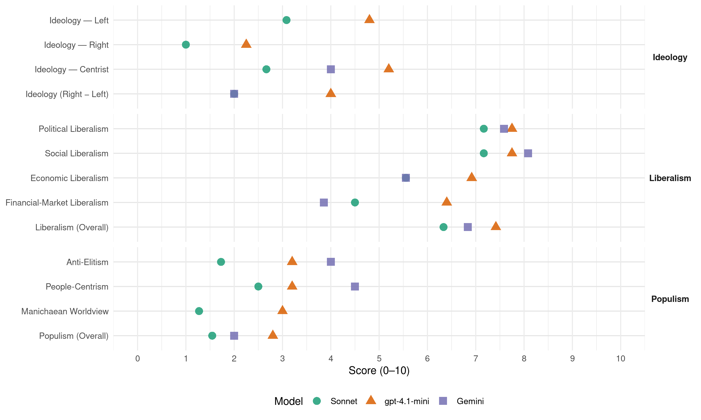

cdH (Belgium, 2010)
manifesto_id 21522_201006
Get full text: This site shows derived annotations and short verbatim quotes only. The full manifesto text is © Manifesto Project / WZB — obtain it via manifesto-project.wzb.eu using the manifesto_id above.
Headline scores
| Dimension | Sonnet | gpt-4.1-mini | Gemini |
|---|---|---|---|
| Populism (Overall) | 1.5 | 2.8 | 2.0 |
| Anti-Elitism | 1.7 | 3.2 | 4.0 |
| People-Centrism | 2.5 | 3.2 | 4.5 |
| Manichaean Worldview | 1.3 | 3.0 | – |
| Ideology (Right − Left) | 2.0 | 4.0 | 2.0 |
| Liberalism (Overall) | 6.3 | 7.4 | 6.8 |
| Political Liberalism | 7.2 | 7.8 | 7.6 |
| Social Liberalism | 7.2 | 7.8 | 8.1 |
| Economic Liberalism | 5.6 | 6.9 | 5.6 |
| Financial-Market Liberalism | 4.5 | 6.4 | 3.9 |
Evidence per dimension
Economic Liberalism
Gemini · score 6.0 · verified · chunk 1
“doper le développement de l’entreprenariat”
Nous devrons également doper le développement de l’entreprenariat et investir massivement dans les trois secteurs
Gemini · score 6.0 · verified · chunk 2
“diminuer le coût du travail pour les entreprises”
avec nos principaux partenaires, nous devons continuer à diminuer le coût du travail pour les entreprises en ayant pour objectif de supprimer le différentiel de
Gemini · score 6.0 · verified · chunk 3
“favorisant les investissements créateurs d’emplois durables”
diminution drastique des cotisations sociales patronales; Favorisant les investissements créateurs d’emplois durables via une réforme de l’impôt des
Gemini · score 7.0 · verified · chunk 4
“concurrence loyale entre les acteurs économiques”
grands courants de fraude qui faussent la concurrence loyale entre les acteurs économiques. Il faut aussi que
Gemini · score 3.0 · verified · chunk 5
“Réglementer de manière stricte les publicités”
Toute discrimination doit être combattue ; Réglementer de manière stricte les publicités « miraculeuses » sur les pertes de
Gemini · score 4.0 · verified · chunk 6
“fiscalisation des loyers dépassant une grille”
Alléger la pression locative via une fiscalisation des loyers dépassant une grille indicative des loyers, en rapport à la qualité de l’habitat
Gemini · score 5.0 · verified · chunk 7
“incitants fiscaux le logement confié à des agences”
Favoriser notamment par des incitants fiscaux le logement confié à des agences immobilières sociales
Gemini · score 5.0 · mixed · chunk 10
“développement d’une concurrence équitable”
entreprises publiques. L’Etat doit assurer le développement d’une concurrence équitable et à armes égales sur les marchés libéralisés
Gemini · score 6.0 · verified · chunk 11
“marchés et des prix concurrentiels pour les consommateurs”
L’objectif de parvenir à des marchés et des prix concurrentiels pour les consommateurs n’a malheureusement pas pu être atteint
Gemini · score 7.0 · verified · chunk 12
“l’amélioration du climat des affaires”
la promotion de la bonne gouvernance, la lutte contre la corruption et l’amélioration du climat des affaires ;
gpt-4.1-mini · score 7.0 · verified · chunk 1
“une croissance durable, humaine et inclusive”
Cette stratégie BE 2020 devra prendre la forme d’un pacte général qui constituera la nouvelle base de la stratégie de développement de notre pays pour les 10 prochaines années. Elle devra permettre de susciter une croissance durable, humaine et inclusive, ainsi que définir les nouvelles bases de financement et de soutenabilité de notre politique de solidarité et de sécurité sociale.
gpt-4.1-mini · score 8.0 · verified · chunk 2
“réduction structurelle des cotisations sociales”
Organiser une réduction du coût du travail pour augmenter la capacité d’embauche via : Une réduction structurelle des cotisations sociales, Avec en outre une diminution prioritaire des cotisations patronales sur les bas salaires,
gpt-4.1-mini · score 7.0 · verified · chunk 3
“réforme de l’impôt des sociétés”
Favorisant les investissements créateurs d’emplois durables via une réforme de l’impôt des sociétés ; Favorisant les comportements positifs…
gpt-4.1-mini · score 7.0 · verified · chunk 4
“donneront un message clair aux investisseurs étrangers, dont le rôle est primordial pour l’emploi en Belgique”
Le cdH est partisan de mesures simples, qui d’une part, donneront un message clair aux investisseurs étrangers, dont le rôle est primordial pour l’emploi en Belgique, et qui, d’autre part seront en faveur des revenus provenant du travail. Il s’agit d’utiliser notamment l’instrument fiscal pour encourager l’investissement dans le capital humain (formation, recherche, innovation) reconnu comme un facteur de croissance ainsi que de luttes contre les exclusions, dès lors que l’absence de formation est précisément le handicap majeur de beaucoup de sans emplois.
gpt-4.1-mini · score 7.0 · verified · chunk 5
“Promouvoir une gestion plus humaine des entreprises”
2) Développer la responsabilité sociétale des entreprises Voir partie 1, Chap.3 - Promouvoir une gestion plus humaine des entreprises.
gpt-4.1-mini · score 7.0 · verified · chunk 6
“lutte contre l’écart salarial”
…Lutter contre l’écart salarial, reflet des inégalités professionnelles entre les hommes et les femmes Le cdH souhaite mettre en place un plan d’action national visant la réduction de l’écart salarial. Il s’agit d’un plan stratégique qui intègrera une série de mesures cohérentes…
gpt-4.1-mini · score 7.0 · verified · chunk 7
“Favoriser notamment par des incitants fiscaux le logement confié à des agences immobilières sociales”
Le cdH propose de : Favoriser notamment par des incitants fiscaux le logement confié à des agences immobilières sociales, prenant en charge des logements privés, garantissant aux propriétaires une continuité de revenus locatifs en échange d’un coût modéré de loyers ; Favoriser les colocations de logements diminuant le coût à prendre en charge par chaque colocataire et en ne pénalisant pas les colocataires bénéficiaires de revenus de remplacement (chômage, RIS, mutuelle, allocations de handicapés, etc.) ; Favoriser le maintien en ville ou dans les régions habitées depuis leur enfance des jeunes adultes, via des abattements fiscaux accompagnant la politique régionale en la matière ; Favoriser la protection du patrimoine immobilier familial par la mobilisation de l’épargne familiale dans une solidarité entre les générations via un abattement fiscal correspondant à l’intérêt abandonné dans le prêt gracieux aux enfants ou aux descendants du troisième degré, pour aider à l’investissement durable ; Alléger la pression locative via une fiscalisation des loyers dépassant une grille indicative des loyers, en rapport à la qualité de l’habitat et la zone géographique concernée.
gpt-4.1-mini · score 6.0 · verified · chunk 8
“diversification des mesures proposées”
Le cdH est d’avis que la solution pour diminuer le coût de l’accès à la justice réside dans une diversification des mesures proposées
gpt-4.1-mini · score 7.0 · verified · chunk 9
“crise économique et sociale la plus forte depuis la seconde guerre mondiale”
Les Belges vivent certes une crise profonde à l’intensité inédite : la crise économique et sociale la plus forte depuis la seconde guerre mondiale, liée à une crise financière qui remet fondamentalement en cause le système débridé de marchés financiers dont nous avons vécu les limites en direct depuis bientôt deux ans.
gpt-4.1-mini · score 6.0 · verified · chunk 10
“D’intégrer le processus budgétaire avec celui de la gestion et établir ainsi des budgets fondés sur des programmes”
2) Axer la gestion publique sur la performance La gestion des deniers publics a toujours été au centre des préoccupations de bonne gouvernance publique. Pour le cdH, il est impératif d’axer la gestion sur la performance en vue de garantir un cycle de gestion dans lequel les objectifs de performance des programmes sont fixés, où les responsables disposent d’une certaine liberté pour les atteindre, où la performance réelle est mesurée et fait l’objet de rapports. a. Passer d’une culture de la dépense à une culture de l’efficacité Pour le cdH, il convient de révolutionner la pratique budgétaire, non pas seulement dans l’objectif d’élaborer des processus par lesquels on intègre techniquement mieux les préoccupations d’efficacité et d’efficience mais bien dans le but de créer, d’améliorer la prise de décision au cours du processus budgétaire, de renforcer la transparence et la responsabilisation des fonctionnaires dirigeants tout en permettant de réaliser certaines économies dans l’affectation des moyens. Le cdH propose : D’intégrer le processus budgétaire avec celui de la gestion et établir ainsi des budgets fondés sur des programmes, produits et prestations ; Construire une comptabilité qui supporte une vision managériale du budget grâce à des comptes en partie double avec bilan et comptabilité de gestion qui mesure le coût des produits ; Donner à l’inspection des Finances un rôle d’appui des autorités dans la détermination des budgets nécessaires pour atteindre les performances exigées, pour évaluer ex-ante les nouveaux projets et pour procéder à des évaluations ex-post qui servent d’appui aux budgets de l’exercice suivant ; Confier à la Cour des Comptes une mission d’audit externe et d’évaluation a posteriori de la performance des administrations. Ces missions permettent la suppression du contrôle de l’exécution du budget par ces instances pour autant qu’un système de contrôle interne soit mis en place.
gpt-4.1-mini · score 7.0 · verified · chunk 11
“libéralisation de ces marchés, il est indispensable que ceux-ci puissent être régulés”
S’il semble difficile de revenir sur le principe de la libéralisation de ces marchés, il est indispensable que ceux-ci puissent être régulés en prévoyant des organismes et des mécanismes à la mesure des groupes énergétiques dont la taille et les moyens sont conséquents.
gpt-4.1-mini · score 7.0 · verified · chunk 12
“la lutte contre la corruption et l’amélioration du climat des affaires”
Promouvoir la bonne gouvernance, la lutte contre la corruption et l’amélioration du climat des affaires.
Sonnet · score 6.0 · verified · chunk 1
“diminution drastique du coût du travail”
Afin d’augmenter l’offre d’emploi, nous devrons travailler à une diminution drastique du coût du travail.
Sonnet · score 7.0 · verified · chunk 2
“réduire le coût du travail pour les entreprises”
nous devons continuer à diminuer le coût du travail pour les entreprises en ayant pour objectif de supprimer le différentiel de compétitivité salariale avec nos principaux partenaires
Sonnet · score 5.0 · mixed · chunk 3
“Lutter rapidement contre toute tentative de retour au protectionnisme”
Etablir une stratégie cohérente pour mettre fin aux blocages et chaînons manquants existant encore au sein du marché unique ; Lutter rapidement contre toute tentative de retour au protectionnisme au sein de l’Union
Sonnet · score 6.0 · verified · chunk 4
“concurrence loyale entre les acteurs économiques”
lutter contre les grands courants de fraude qui faussent la concurrence loyale entre les acteurs économiques
Sonnet · score 4.0 · verified · chunk 5
“non déductibilité fiscale des dépenses de promotion”
mesures efficaces visant à restreindre la promotion abusive pour les produits de santé (régulation, non déductibilité fiscale des dépenses de promotion, autres mesures fiscales non discriminatoires)
Sonnet · score 5.0 · verified · chunk 6
“autonomie de gestion de toutes les institutions hospitalières”
Consacrer l’autonomie de gestion de toutes les institutions hospitalières, quel que soit leur statut, qu’elles soient publiques ou privées
Sonnet · score 5.0 · verified · chunk 7
“incitants fiscaux le logement confié”
Favoriser notamment par des incitants fiscaux le logement confié à des agences immobilières sociales, prenant en charge des logements privés
Sonnet · score 5.0 · verified · chunk 8
“diversifier les sources de financement”
Diversifier les sources de financement. Les générateurs de risques pourraient être mis à contribution
Sonnet · score 5.0 · verified · chunk 9
“concurrence fiscale dangereuse entre Régions”
OUI à certains transferts de compétences s’ils sont rationnels, efficaces et accompagnés des moyens financiers suffisants, pour peu que l’on ne touche pas à la sécurité sociale ou que l’on ne crée pas une concurrence fiscale dangereuse entre Régions
Sonnet · score 6.0 · mixed · chunk 10
“nouveaux instruments de gouvernance comme ceux basés sur le marché”
Mettre en avant l’utilisation des nouveaux instruments de gouvernance comme ceux basés sur le marché, les labels, le benchmarking et les contrats de gestion.
Sonnet · score 6.0 · mixed · chunk 11
“marchés du gaz et de l’électricité ont été libéralisés”
Sous l’impulsion de la Commission Européenne, les marchés du gaz et de l’électricité ont été libéralisés. L’objectif de parvenir à des marchés et des prix concurrentiels pour les consommateurs n’a malheureusement pas pu être atteint
Sonnet · score 7.0 · verified · chunk 12
“l’amélioration du climat des affaires”
la promotion de la bonne gouvernance, la lutte contre la corruption et l’amélioration du climat des affaires
Financial-Market Liberalism
Gemini · score 3.0 · verified · chunk 1
“système débridé des marchés financiers”
remet fondamentalement en cause le système débridé des marchés financiers. A cette crise profonde, qui a mobilisé
Gemini · score 4.0 · verified · chunk 2
“La fiscalité sur les flux financiers et le capital”
par un financement alternatif de la sécurité sociale qui devra se baser sur un triptyque de recettes nouvelles : La fiscalité environnementale, La fiscalité sur les flux financiers et le capital, Une meilleure perception de l’impôt
Gemini · score 5.0 · verified · chunk 3
“réforme du fonctionnement du contrôle prudentiel”
CBFA était plus que nécessaire; la réforme du fonctionnement du contrôle prudentiel par la modification des compétences de la Banque Nationale
Gemini · score 3.0 · verified · chunk 4
“lutter contre la spéculation financière”
la taxe Tobin au niveau européen afin de lutter contre la spéculation financière et augmenter la taxation
Gemini · score 3.0 · verified · chunk 5
“législation en matière de crédit”
et en matière de crédit hypothécaire La législation en matière de crédit à la consommation a été réformée
Gemini · score 5.0 · verified · chunk 10
“service universel dans des secteurs libéralisés”
définition par les pouvoirs publics du service universel dans des secteurs libéralisés au niveau européen tels que les télécoms, l’assurance ou les services bancaires.
Gemini · score 4.0 · verified · chunk 11
“réglementation et la surveillance financière”
normes globales élevées pour la réglementation, la surveillance financière et la stabilité financière. Pour le cdH
gpt-4.1-mini · score 6.0 · verified · chunk 1
“importance d’une meilleure régulation financière”
L’actuelle crise économique a ainsi mis en évidence l’importance d’une meilleure régulation financière, comme d’une gouvernance économique coordonnée au niveau européen. Elle a également mis en exergue la responsabilité sociale que les agents économiques doivent assumer par-delà leur légitime recherche du profit.
gpt-4.1-mini · score 7.0 · verified · chunk 3
“contrôle prudentiel par la modification des compétences”
La réforme du fonctionnement du contrôle prudentiel par la modification des compétences de la Banque Nationale de Belgique et de la Commission Bancaire…
gpt-4.1-mini · score 6.0 · verified · chunk 4
“Encourager l’adoption de mesures telles que la taxe Tobin au niveau européen afin de lutter contre la spéculation financière”
Le cdH propose de: Encourager l’adoption de mesures telles que la taxe Tobin au niveau européen afin de lutter contre la spéculation financière et augmenter la taxation du capital afin de dégager des marges pour diminuer la pression fiscale qui pèse actuellement sur le travail ; Taxer les plus-values sur les actions détenues à titre de placement ou à des fins spéculatives par les sociétés.
gpt-4.1-mini · score 6.0 · verified · chunk 9
“crise financière qui remet fondamentalement en cause le système débridé de marchés financiers”
Les Belges vivent certes une crise profonde à l’intensité inédite : la crise économique et sociale la plus forte depuis la seconde guerre mondiale, liée à une crise financière qui remet fondamentalement en cause le système débridé de marchés financiers dont nous avons vécu les limites en direct depuis bientôt deux ans.
gpt-4.1-mini · score 7.0 · verified · chunk 11
“crise financière puis économique et sociale ou les soubresauts sur les marchés monétaires”
La crise financière puis économique et sociale ou les soubresauts sur les marchés monétaires démontrent que seule l’Union européenne, en coopération avec ses Etats membres, peut disposer des moyens de répondre à ces nouveaux défis. De même, les dangers du changement climatique ou les nouveaux risques en matière de sécurité comme le terrorisme ou la prolifération nucléaire ne peuvent être abordés individuellement par les Etats membres.
Sonnet · score 4.0 · verified · chunk 1
“meilleure régulation financière”
L’actuelle crise économique a ainsi mis en évidence l’importance d’une meilleure régulation financière, comme d’une gouvernance économique coordonnée au niveau européen.
Sonnet · score 5.0 · mixed · chunk 2
“fiscalité sur les flux financiers et le capital”
Compenser cette réduction des cotisations sociales… par un financement alternatif de la sécurité sociale qui devra se baser sur un triptyque de recettes nouvelles : La fiscalité environnementale, La fiscalité sur les flux financiers et le capital
Sonnet · score 4.0 · mixed · chunk 3
“taxe sur les transactions financières”
Etablir une taxe sur les transactions financières pour alimenter le budget européen, pour décourager la prise de risque excessive et pour responsabiliser le secteur face à la crise
Sonnet · score 4.0 · verified · chunk 4
“taxe Tobin au niveau européen”
Encourager l’adoption de mesures telles que la taxe Tobin au niveau européen afin de lutter contre la spéculation financière
Sonnet · score 4.0 · verified · chunk 5
“Interdire de lier l’octroi d’une ouverture de crédit”
Interdire de lier l’octroi d’une ouverture de crédit à l’ouverture d’un compte bancaire ; Vérifier le respect de l’obligation d’information et de conseil du prêteur
Sonnet · score 5.0 · verified · chunk 8
“financement possible via emprunt de plus de 2 milliards”
rendement escompté de 12,8 millions € annuel soit un financement possible via emprunt de plus de 2 milliards d’euros sur emprunt en 20 ans
Sonnet · score 4.0 · verified · chunk 9
“système débridé de marchés financiers”
liée à une crise financière qui remet fondamentalement en cause le système débridé de marchés financiers dont nous avons vécu les limites en direct depuis bientôt deux ans
Sonnet · score 5.0 · mixed · chunk 10
“marchés du gaz et de l’électricité ont été libéralisés”
les marchés du gaz et de l’électricité ont été libéralisés. L’objectif de parvenir à des marchés et des prix concurrentiels pour les consommateurs n’a malheureusement pas pu être atteint
Sonnet · score 4.0 · mixed · chunk 11
“Rétablir la séparation nette entre les banques”
Le cdH propose de : Rétablir la séparation nette entre les banques d’affaires et les banques de dépôts ; Assurer une adoption rapide par l’ensemble des Etats des réformes réglementaires
Sonnet · score 6.0 · verified · chunk 12
“élimination des paradis fiscaux”
en poursuivant l’élimination des paradis fiscaux et en renforçant les mesures d’identification dans les transferts électroniques de fonds
Political Liberalism
Gemini · score 7.0 · verified · chunk 1
“gérer l’Etat afin de continuer à répondre”
Notre ambition première est de pouvoir gérer l’Etat afin de continuer à répondre au quotidien aux problèmes, en matière d’emploi
Gemini · score 7.0 · verified · chunk 2
“mettre en place dans toutes les administrations publiques”
une politique volontariste d’insertion professionnelle ; A cette fin mettre en place dans toutes les administrations publiques un plan d’envergure visant à promouvoir le recrutement
Gemini · score 7.0 · verified · chunk 3
“adopter dans les meilleurs délais par le Parlement”
Le cdH propose de : Faire adopter dans les meilleurs délais par le Parlement le projet de loi relatif au temps de travail
Gemini · score 7.0 · verified · chunk 4
“un véritable contrôle parlementaire”
les activités des administrations fiscales seront soumises à un véritable contrôle parlementaire ; Réformer la procédure
Gemini · score 8.0 · verified · chunk 5
“afin de garantir les libertés individuelles”
modalités d’admission forcée afin de garantir les libertés individuelles pour le patient et faciliter l’exercice
Gemini · score 7.0 · verified · chunk 6
“l’organisation judiciaire ainsi que des relations”
l’enfant y est bien souvent la première victime. Il doit être au centre de la lutte pour humaniser la gestion des conflits familiaux et l’amélioration de l’organisation judiciaire ainsi que des relations entre la justice et les familles.
Gemini · score 8.0 · verified · chunk 7
“respect des différences culturelles et religieuses”
il veut allier le respect des différences culturelles et religieuses, l’insertion, l’interrelation entre tous
Gemini · score 8.0 · verified · chunk 8
“respect de l’autonomie et l’indépendance des juridictions”
géographiques et garantir une justice de proximité dans les zones rurales ; Le respect de l’autonomie et l’indépendance des juridictions, particulièrement en matière de nomination et de mobilité
Gemini · score 8.0 · verified · chunk 9
“garant de l’ordre démocratique”
entre les intérêts supérieurs de l’Etat garant de l’ordre démocratique et la sauvegarde des droits et de la vie
Gemini · score 8.0 · verified · chunk 10
“garantir la démocratie, l’Etat de droit”
Les parlements ont un rôle pivot pour garantir la démocratie, l’Etat de droit ainsi que les droits de l’homme. Il est donc
Gemini · score 8.0 · verified · chunk 11
“démocratie, État de droit, droits de l’homme”
demeure la conformité aux critères de Copenhague (démocratie, État de droit, droits de l’homme, égalité des femmes et des hommes
Gemini · score 8.0 · verified · chunk 12
“croissance du nombre de régimes démocratiques”
diminution progressive des conflits armés et la croissance du nombre de régimes démocratiques, notamment en Afrique.
gpt-4.1-mini · score 8.0 · verified · chunk 1
“le respect de la diversité avec les besoins d’universalité et de lien social”
Par ailleurs, nous devrons réussir notre politique d’insertion et de diversité avec une politique active de lutte contre les discriminations et de nouvelles politiques qui allient le respect de la diversité avec les besoins d’universalité et de lien social. Priorité N°4 : Un nouveau pacte pour la sécurité des Belges La réforme de la justice, sa rapidité, sa célérité, une amélioration de la sécurité, à Bruxelles comme dans l’ensemble du pays, le renforcement de l’efficacité et du nombre de policiers, l’accompagnement et le développement du statut des pompiers et de la protection civile devront également être des thèmes également prioritaires pour les mois à venir.
gpt-4.1-mini · score 7.0 · verified · chunk 2
“le respect des législations en vigueur”
Améliorer la qualité du système des titres-services ainsi que le respect des législations en vigueur, le nombre de contrôles a été largement augmenté en vue de lutter efficacement contre la fraude dans le système des titres-services.
gpt-4.1-mini · score 8.0 · verified · chunk 3
“le rôle du dialogue social”
Adopter des recommandations politiques relatives aux compétences des travailleurs et au rôle du dialogue social (y compris sectoriel)…
gpt-4.1-mini · score 7.0 · verified · chunk 4
“moderniser le rôle de l’impôt, en disposant d’une administration fiscale efficiente et performante”
dissuader la fraude fiscale Il convient de rétablir une véritable égalité entre les Belges en luttant énergiquement contre la fraude fiscale, source d’injustice entre les contribuables. Nous devons moderniser le rôle de l’impôt, en disposant d’une administration fiscale efficiente et performante, et en luttant résolument contre la fraude fiscale et l’arriéré fiscal, afin que l’impôt soit ressenti comme juste par ceux qui le paient et ne constitue plus un élément de concurrence déloyale entre les acteurs économiques.
gpt-4.1-mini · score 8.0 · verified · chunk 5
“la loi du 22 août 2002 relative aux droits du patient”
Quatre ans après son entrée en vigueur, la loi du 22 août 2002 relative aux droits du patient mérite d’être corrigée sur une série de points importants : l’humanisation de la relation thérapeutique doit encore être concrètement améliorée.
gpt-4.1-mini · score 8.0 · verified · chunk 6
“lutte contre les discriminations entre les genres”
…Rendre la loi gendermainstreaming opérationnelle en intégrant la dimension du genre à tout niveau de prise de décision et ce dès l’élaboration de la déclaration gouvernementale et des notes de politique générale de chaque Ministre ; Utiliser systématiquement des données sexuées dans l’élaboration des statistiques ; Mettre en place concrètement le gender budgeting ; Mettre en place le « gender test ». 2) Les femmes et l’emploi…
gpt-4.1-mini · score 8.0 · verified · chunk 7
“le respect des différences culturelles et religieuses, l’insertion, l’interrelation entre tous, la lutte contre les discriminations et l’adhésion à des valeurs démocratiques communes”
Notre modèle multiculturel est interculturel, mixte et interactif ; il veut allier le respect des différences culturelles et religieuses, l’insertion, l’interrelation entre tous, la lutte contre les discriminations et l’adhésion à des valeurs démocratiques communes. Pour le cdH, une politique interculturelle respectueuse et responsable doit se baser sur trois grands axes : L’insertion socio-économique ; La diversité culturelle ; Les politiques d’accueil.
gpt-4.1-mini · score 7.0 · verified · chunk 8
“améliorer l’accès du citoyen à l’information juridique”
Rendre le droit accessible au citoyen signifie d’abord améliorer l’accès du citoyen à l’information juridique et faciliter la compréhension du droit par le justiciable.
gpt-4.1-mini · score 8.0 · verified · chunk 9
“renforcer la moralisation de la vie politique ainsi que le contrôle, la transparence”
…nous voulons poursuivre les réformes éthiques que nous avons imposées jusqu’à présent afin de renforcer la moralisation de la vie politique ainsi que le contrôle, la transparence et l’évaluation interne et externe de l’action politique. Nous voulons notamment renforcer les règles relatives aux conflits d’intérêts et aux incompatibilités et réinstaurer le comité supérieur de contrôle et ses missions préventives pour lutter contre la corruption.
gpt-4.1-mini · score 8.0 · verified · chunk 10
“Le Parlement fédéral voit son rôle s’effriter dans les faits”
B. Dynamiser les organes de contrôle 1) Renforcer et vitaliser le Parlement Les parlements ont un rôle pivot pour garantir la démocratie, l’Etat de droit ainsi que les droits de l’homme. Il est donc important de renforcer leur rôle. De plus, des parlements solides supposent des pratiques électorales transparentes et justes. a. Lancer une vaste réforme qui modernise et améliore l’action et l’efficacité du Parlement Le Parlement fédéral voit son rôle s’effriter dans les faits : absences de marges de manœuvre, déficit d’informations, méthodes de travail peu modernisées, etc. Le cdH propose : D’inscrire dans la Constitution l’interdiction que se présenter simultanément à deux élections dont les mandats sont incompatibles entre eux et l’obligation d’exercer le mandat électif auquel le candidat a été élu ; Conclure des « contrats de législature » entre Parlement et Gouvernement en vue de répartir les tâches d’initiative législative et responsabiliser davantage le Parlement sur des thèmes précis ; Lancer une commission spéciale composée de parlementaires et de personnes ressources extérieures pour réformer le fonctionnement du Parlement visant une amélioration de l’organisation de son travail, le renforcement des outils, de l’information, de l’évaluation des lois et des services publics, du lien avec la société civile, des relations de travail avec les parlementaires belges du Parlement Européen et les autres institutions internationales (OMC et l’ONU) ; Inscrire la Belgique dans le processus de développement et de coopération parlementaires des Nations Unies.
gpt-4.1-mini · score 8.0 · verified · chunk 11
“Respecter pleinement les procédures communautaires”
Le cdH propose de : Respecter pleinement les procédures communautaires et éviter la mise en place d’un directoire des grands pays ; Utiliser pleinement le mécanisme de pétition et le mécanisme du droit d’initiative citoyen introduit par le Traité de Lisbonne ; Adapt…
gpt-4.1-mini · score 8.0 · verified · chunk 12
“Il est essentiel que les Nations Unies demeurent un lieu de négociation et de développement du droit international et des droits humains.”
Il est essentiel que les Nations Unies demeurent un lieu de négociation et de développement du droit international et des droits humains. C’est pourquoi l’Assemblée générale doit être plus performante.
Sonnet · score 6.0 · verified · chunk 1
“réformer l’Etat”
nous savons, cependant, que nous devrons également réformer l’Etat. C’est pourquoi nous souhaitons établir un nouveau Pacte de Respect et de Solidarité entre les Belges.
Sonnet · score 7.0 · verified · chunk 2
“concertation avec les partenaires sociaux”
une vaste opération de réduction du coût du travail afin de supprimer l’écart salarial avec les pays de références ; Compenser cette réduction des cotisations sociales, basée au départ sur une actualisation des cotisations réelles payées depuis le début de la mise en place des réductions structurelles, par un financement alternatif de la sécurité sociale qui devra se baser sur un triptyque de recettes nouvelles
Sonnet · score 7.0 · verified · chunk 3
“pouvoirs de contrôle et d’analyse sur place à la Commission européenne”
Renforcer les mécanismes de gouvernance afin de s’assurer que les Etats membres respectent leurs engagements, notamment en attribuant des pouvoirs de contrôle et d’analyse sur place à la Commission européenne
Sonnet · score 7.0 · verified · chunk 4
“contrôle parlementaire”
activités des administrations fiscales seront soumises à un véritable contrôle parlementaire
Sonnet · score 6.0 · verified · chunk 5
“garantir les libertés individuelles pour le patient”
Réformer les modalités d’admission forcée afin de garantir les libertés individuelles pour le patient et faciliter l’exercice de la loi
Sonnet · score 7.0 · verified · chunk 6
“droits de la défense du prescripteur”
Conditionner l’application d’une sanction financière individuelle à la constatation d’un acte qui contredit manifestement et durablement les indicateurs et à la mise en place d’une procédure qui garantisse les droits de la défense du prescripteur concerné (droit d’être assisté d’un conseil, droit d’être entendu et de recevoir copie du dossier d’instruction, etc.)
Sonnet · score 7.0 · verified · chunk 7
“viabilité d’un Etat démocratique impose”
La viabilité d’un Etat démocratique impose de créer des services de police, de prévention et de secours destinés prioritairement
Sonnet · score 7.0 · verified · chunk 8
“respect de la séparation des pouvoirs”
Veiller au respect du principe de la séparation des pouvoirs
Sonnet · score 8.0 · verified · chunk 9
“garantir la démocratie, l’Etat de droit”
Les parlements ont un rôle pivot pour garantir la démocratie, l’Etat de droit ainsi que les droits de l’homme.
Sonnet · score 8.0 · verified · chunk 10
“garantir la démocratie, l’Etat de droit”
Les parlements ont un rôle pivot pour garantir la démocratie, l’Etat de droit ainsi que les droits de l’homme.
Sonnet · score 8.0 · verified · chunk 11
“démocratie, État de droit, droits de l’homme”
le préalable aux négociations en vue de l’adhésion demeure la conformité aux critères de Copenhague (démocratie, État de droit, droits de l’homme, égalité des femmes et des hommes, économie de marché
Sonnet · score 8.0 · verified · chunk 12
“la démocratie et le développement économique”
Plaider pour un engagement de la Belgique en faveur de la stabilité, la démocratie et le développement économique en Afrique centrale
Liberalism (Overall)
Gemini · score 6.0 · verified · chunk 1
“doper le développement de l’entreprenariat”
Nous devrons également doper le développement de l’entreprenariat et investir massivement dans les trois secteurs
Gemini · score 6.0 · verified · chunk 2
“diminuer le coût du travail pour les entreprises”
avec nos principaux partenaires, nous devons continuer à diminuer le coût du travail pour les entreprises en ayant pour objectif de supprimer le différentiel de
Gemini · score 7.0 · verified · chunk 3
“réforme du fonctionnement du contrôle prudentiel”
CBFA était plus que nécessaire; la réforme du fonctionnement du contrôle prudentiel par la modification des compétences de la Banque Nationale
Gemini · score 6.0 · verified · chunk 4
“concurrence loyale entre les acteurs économiques”
grands courants de fraude qui faussent la concurrence loyale entre les acteurs économiques. Il faut aussi que
Gemini · score 6.0 · verified · chunk 5
“afin de garantir les libertés individuelles”
modalités d’admission forcée afin de garantir les libertés individuelles pour le patient et faciliter l’exercice
Gemini · score 6.0 · verified · chunk 6
“lutter contre toutes les formes de discrimination”
Wouloir remettre l’humain au centre de notre projet de société, cela demande d’accorder une attention privilégiée aux personnes sans distinction. Concrètement, il convient donc de lutter contre toutes les formes de discrimination et de promouvoir l’égalité des chances.
Gemini · score 7.0 · verified · chunk 7
“lutter contre toutes les formes de discrimination”
il convient donc de lutter contre toutes les formes de discrimination et de promouvoir l’égalité des chances.
Gemini · score 8.0 · verified · chunk 8
“respect de l’autonomie et l’indépendance des juridictions”
géographiques et garantir une justice de proximité dans les zones rurales ; Le respect de l’autonomie et l’indépendance des juridictions, particulièrement en matière de nomination et de mobilité
Gemini · score 8.0 · verified · chunk 9
“garant de l’ordre démocratique”
entre les intérêts supérieurs de l’Etat garant de l’ordre démocratique et la sauvegarde des droits et de la vie
Gemini · score 7.0 · verified · chunk 10
“garantir la démocratie, l’Etat de droit”
Les parlements ont un rôle pivot pour garantir la démocratie, l’Etat de droit ainsi que les droits de l’homme. Il est donc
Gemini · score 7.0 · verified · chunk 11
“démocratie, de l’État de droit et de respect”
Les valeurs de démocratie, de l’État de droit et de respect des droits de l’homme
Gemini · score 8.0 · verified · chunk 12
“croissance du nombre de régimes démocratiques”
diminution progressive des conflits armés et la croissance du nombre de régimes démocratiques, notamment en Afrique.
gpt-4.1-mini · score 7.0 · verified · chunk 1
“une croissance durable, humaine et inclusive”
Cette stratégie BE 2020 devra prendre la forme d’un pacte général qui constituera la nouvelle base de la stratégie de développement de notre pays pour les 10 prochaines années. Elle devra permettre de susciter une croissance durable, humaine et inclusive, ainsi que définir les nouvelles bases de financement et de soutenabilité de notre politique de solidarité et de sécurité sociale.
gpt-4.1-mini · score 8.0 · verified · chunk 2
“réduction structurelle des cotisations sociales”
Organiser une réduction du coût du travail pour augmenter la capacité d’embauche via : Une réduction structurelle des cotisations sociales, Avec en outre une diminution prioritaire des cotisations patronales sur les bas salaires,
gpt-4.1-mini · score 7.0 · verified · chunk 3
“la réforme du fonctionnement du contrôle prudentiel”
La réforme du fonctionnement du contrôle prudentiel par la modification des compétences de la Banque Nationale de Belgique et de la Commission Bancaire…
gpt-4.1-mini · score 7.0 · verified · chunk 4
“moderniser le rôle de l’impôt, en disposant d’une administration fiscale efficiente et performante”
dissuader la fraude fiscale Il convient de rétablir une véritable égalité entre les Belges en luttant énergiquement contre la fraude fiscale, source d’injustice entre les contribuables. Nous devons moderniser le rôle de l’impôt, en disposant d’une administration fiscale efficiente et performante, et en luttant résolument contre la fraude fiscale et l’arriéré fiscal, afin que l’impôt soit ressenti comme juste par ceux qui le paient et ne constitue plus un élément de concurrence déloyale entre les acteurs économiques.
gpt-4.1-mini · score 8.0 · verified · chunk 5
“la loi du 22 août 2002 relative aux droits du patient mérite d’être corrigée”
Quatre ans après son entrée en vigueur, la loi du 22 août 2002 relative aux droits du patient mérite d’être corrigée sur une série de points importants : l’humanisation de la relation thérapeutique doit encore être concrètement améliorée.
gpt-4.1-mini · score 8.0 · verified · chunk 6
“égalité entre les genres”
…L’égalité entre les genres, c’est évidemment l’égalité entre les femmes et les hommes. Mais pas uniquement : une véritable égalité entre les genres doit également concerner les discriminations dont sont victimes les personnes transgenres et transsexuelles…
gpt-4.1-mini · score 8.0 · verified · chunk 7
“lutter contre toutes les formes de discrimination et de promouvoir l’égalité des chances”
Vouloir remettre l’humain au centre de notre projet de société, cela demande d’accorder une attention privilégiée aux personnes sans distinction. Concrètement, il convient donc de lutter contre toutes les formes de discrimination et de promouvoir l’égalité des chances.
gpt-4.1-mini · score 6.0 · verified · chunk 8
“améliorer l’accès du citoyen à l’information juridique”
Rendre le droit accessible au citoyen signifie d’abord améliorer l’accès du citoyen à l’information juridique et faciliter la compréhension du droit par le justiciable.
gpt-4.1-mini · score 7.0 · verified · chunk 9
“renforcer la moralisation de la vie politique ainsi que le contrôle, la transparence”
…nous voulons poursuivre les réformes éthiques que nous avons imposées jusqu’à présent afin de renforcer la moralisation de la vie politique ainsi que le contrôle, la transparence et l’évaluation interne et externe de l’action politique. Nous voulons notamment renforcer les règles relatives aux conflits d’intérêts et aux incompatibilités et réinstaurer le comité supérieur de contrôle et ses missions préventives pour lutter contre la corruption.
gpt-4.1-mini · score 7.0 · verified · chunk 10
“Le Parlement fédéral voit son rôle s’effriter dans les faits”
B. Dynamiser les organes de contrôle 1) Renforcer et vitaliser le Parlement Les parlements ont un rôle pivot pour garantir la démocratie, l’Etat de droit ainsi que les droits de l’homme. Il est donc important de renforcer leur rôle. De plus, des parlements solides supposent des pratiques électorales transparentes et justes. a. Lancer une vaste réforme qui modernise et améliore l’action et l’efficacité du Parlement Le Parlement fédéral voit son rôle s’effriter dans les faits : absences de marges de manœuvre, déficit d’informations, méthodes de travail peu modernisées, etc. Le cdH propose : D’inscrire dans la Constitution l’interdiction que se présenter simultanément à deux élections dont les mandats sont incompatibles entre eux et l’obligation d’exercer le mandat électif auquel le candidat a été élu ; Conclure des « contrats de législature » entre Parlement et Gouvernement en vue de répartir les tâches d’initiative législative et responsabiliser davantage le Parlement sur des thèmes précis ; Lancer une commission spéciale composée de parlementaires et de personnes ressources extérieures pour réformer le fonctionnement du Parlement visant une amélioration de l’organisation de son travail, le renforcement des outils, de l’information, de l’évaluation des lois et des services publics, du lien avec la société civile, des relations de travail avec les parlementaires belges du Parlement Européen et les autres institutions internationales (OMC et l’ONU) ; Inscrire la Belgique dans le processus de développement et de coopération parlementaires des Nations Unies.
gpt-4.1-mini · score 8.0 · verified · chunk 11
“Respecter pleinement les procédures communautaires”
Le cdH propose de : Respecter pleinement les procédures communautaires et éviter la mise en place d’un directoire des grands pays ; Utiliser pleinement le mécanisme de pétition et le mécanisme du droit d’initiative citoyen introduit par le Traité de Lisbonne ; Adapt…
gpt-4.1-mini · score 8.0 · verified · chunk 12
“Il est essentiel que les Nations Unies demeurent un lieu de négociation et de développement du droit international et des droits humains.”
Il est essentiel que les Nations Unies demeurent un lieu de négociation et de développement du droit international et des droits humains. C’est pourquoi l’Assemblée générale doit être plus performante.
Sonnet · score 6.0 · verified · chunk 1
“lutte contre les discriminations”
nous devrons réussir notre politique d’insertion et de diversité avec une politique active de lutte contre les discriminations
Sonnet · score 7.0 · verified · chunk 2
“lutte contre les discriminations dans les entreprises”
Ceci passe par diverses mesures, qui touchent non seulement l’offre de structures d’accueil des enfants, mais aussi la lutte contre les discriminations dans les entreprises, en passant notamment par le soutien à l’entreprenariat féminin.
Sonnet · score 6.0 · verified · chunk 3
“égalité de traitement aux différents stades de la carrière”
Renforcer la mise en œuvre de l’égalité de traitement aux différents stades de la carrière, en fonction des questions posées par les différents motifs de discrimination (âge, orientation sexuelle, convictions, handicap)
Sonnet · score 6.0 · verified · chunk 4
“contrôle parlementaire”
activités des administrations fiscales seront soumises à un véritable contrôle parlementaire
Sonnet · score 5.0 · verified · chunk 5
“Toute discrimination doit être combattue”
Combattre la stigmatisation des personnes obèses par des actions de communication. Toute discrimination doit être combattue
Sonnet · score 7.0 · verified · chunk 6
“promouvoir l’égalité des chances”
il convient donc de lutter contre toutes les formes de discrimination et de promouvoir l’égalité des chances
Sonnet · score 7.0 · verified · chunk 7
“lutter contre toutes les formes de discrimination”
il convient donc de lutter contre toutes les formes de discrimination et de promouvoir l’égalité des chances.
Sonnet · score 6.0 · verified · chunk 8
“respect de la séparation des pouvoirs”
Veiller au respect du principe de la séparation des pouvoirs
Sonnet · score 6.0 · verified · chunk 9
“garantir la démocratie, l’Etat de droit”
Les parlements ont un rôle pivot pour garantir la démocratie, l’Etat de droit ainsi que les droits de l’homme.
Sonnet · score 7.0 · verified · chunk 10
“garantir la démocratie, l’Etat de droit”
Les parlements ont un rôle pivot pour garantir la démocratie, l’Etat de droit ainsi que les droits de l’homme.
Sonnet · score 6.0 · verified · chunk 11
“démocratie, État de droit, droits de l’homme”
le préalable aux négociations en vue de l’adhésion demeure la conformité aux critères de Copenhague (démocratie, État de droit, droits de l’homme, égalité des femmes et des hommes
Sonnet · score 7.0 · verified · chunk 12
“la démocratie et le développement économique”
Plaider pour un engagement de la Belgique en faveur de la stabilité, la démocratie et le développement économique en Afrique centrale
Anti-Elitism
Gemini · score 5.0 · verified · chunk 5
“sur la pression des partis libéraux”
l’ensemble du secteur horeca, sur la pression des partis libéraux, est inacceptable, compte tenu des dommages
Gemini · score 3.0 · verified · chunk 10
“renforcer davantage la moralisation de la vie politique”
entreprises dans les différents niveaux de pouvoir, nous voulons aller plus loin et renforcer davantage la moralisation de la vie politique. a. Renforcer la transparence des mandats
gpt-4.1-mini · score 3.0 · verified · chunk 1
“un parti flamand a décidé de faire chuter le gouvernement”
…une crise institutionnelle profonde. De manière totalement irresponsable, au moment même où commençaient enfin de réelles négociations et qu’il semblait possible de résoudre de manière équilibrée le difficile problème de l’arrondissement de Bruxelles-Hal-Vilvorde, un parti flamand a décidé de faire chuter le gouvernement et a plongé notre pays dans un chaos absurde. Nous n’avons dès lors qu’un objectif : sortir les Belges de la crise institutionnelle comme de la de la crise socio-économique.
gpt-4.1-mini · score 5.0 · verified · chunk 3
“l’industrie financière qui absorbe une grosse partie des ressources”
…manque de régulation dans l’énergie, la finance et les télécoms et son industrie financière qui absorbe une grosse partie des ressources (capital, talents). Ces ressources pourraient pourtant avoir un impact plus élevé sur le progrès de la productivité…
gpt-4.1-mini · score 3.0 · verified · chunk 4
“lutter énergiquement contre la fraude fiscale, source d’injustice”
dissuader la fraude fiscale Il convient de rétablir une véritable égalité entre les Belges en luttant énergiquement contre la fraude fiscale, source d’injustice entre les contribuables. Nous devons moderniser le rôle de l’impôt, en disposant d’une administration fiscale efficiente et performante, et en luttant résolument contre la fraude fiscale et l’arriéré fiscal, afin que l’impôt soit ressenti comme juste par ceux qui le paient et ne constitue plus un élément de concurrence déloyale entre les acteurs économiques.
gpt-4.1-mini · score 2.0 · verified · chunk 9
“crise institutionnelle profonde qui a plongé notre pays dans un chaos absurde”
…depuis des mois pour protéger les Belges et surtout sauver un maximum d’emplois est venu s’ajouter de manière totalement irresponsable une crise institutionnelle profonde qui a plongé notre pays dans un chaos absurde. Nous n’avons qu’un objectif : sortir les Belges de la crise tant économique qu’institutionnelle. Si notre ambition première est de pouvoir gérer l’Etat…
gpt-4.1-mini · score 3.0 · verified · chunk 10
“Renforcer les règles destinées à éviter les conflits d’intérêts”
s’abstenir de prendre toute décision sur des dossiers de cette nature, ou encore de participer à une délibération du Gouvernement sur ceux-ci. 2) Renforcer les règles destinées à éviter les conflits d’intérêts et les cumuls Dans le cadre de ses activités, un mandataire peut être amené à prendre une décision qui l’intéresse personnellement, directement ou indirectement. Afin d’empêcher toute dérive en la matière, des balises légales et réglementaires s’imposent. Le cdH propose de : Confirmer dans la loi l’impossibilité pour un membre du gouvernement fédéral d’exercer une autre profession ou un autre mandat, qu’il soit public Ŕ à l’exception du mandat de conseiller communal, de conseiller de CPAS et de conseiller de police Ŕ ou privé, rémunéré ou gratuit.
Sonnet · score 2.0 · verified · chunk 1
“système débridé des marchés financiers”
Elle est liée à une crise financière qui remet fondamentalement en cause le système débridé des marchés financiers.
Sonnet · score 1.0 · verified · chunk 2
“l’industrie financière qui absorbe une grosse partie des ressources”
son manque de régulation dans l’énergie, la finance et les télécoms et son industrie financière qui absorbe une grosse partie des ressources (capital, talents). Ces ressources pourraient pourtant avoir un impact plus élevé
Sonnet · score 3.0 · verified · chunk 3
“industrie financière qui absorbe une grosse partie des ressources”
améliorer certaines caractéristiques de son économie, comme son manque de régulation dans l’énergie, la finance et les télécoms et son industrie financière qui absorbe une grosse partie des ressources (capital, talents)
Sonnet · score 3.0 · verified · chunk 4
“grande fraude fiscale reste impunie”
il est inacceptable que la grande fraude fiscale reste impunie faute d’une législation efficace
Sonnet · score 2.0 · mixed · chunk 5
“sur la pression des partis libéraux”
Le report à 2014 de l’extension de l’interdiction de fumer dans l’ensemble du secteur horeca, sur la pression des partis libéraux, est inacceptable
Sonnet · score 1.0 · verified · chunk 6
“La confiance est rompue”
Les prestataires de soins sont mécontents et découragés. Ils sont démotivés, certains quittent la profession ou y renoncent avant même d’avoir commencé. La confiance est rompue. Le cdH propose une autre manière de travailler
Sonnet · score 1.0 · verified · chunk 7
“sentiment d’impunité renforce l’insécurité”
L’effectivité de la sanction fait même partie intégrante de la prévention, alors que le sentiment d’impunité renforce l’insécurité.
Sonnet · score 1.0 · verified · chunk 8
“éviter les déclarations populistes”
Si l’on veut éviter les déclarations populistes et à l
Sonnet · score 2.0 · verified · chunk 9
“éviter les déclarations populistes et à l’emporte-pièce”
Si l’on veut éviter les déclarations populistes et à l’emporte-pièce qui font l’économie de toute réflexion de fond
Sonnet · score 2.0 · verified · chunk 10
“la réforme Copernic a engendré plus de difficultés”
A l’analyse, on ne peut que constater que la réforme Copernic a engendré plus de difficultés qu’elle n’en a résolues.
Sonnet · score 2.0 · verified · chunk 11
“le triomphe de l’idéologie néo-libérale”
Le FMI et la Banque mondiale ont symbolisé, parfois à tort, le triomphe de l’idéologie néo-libérale critiquant l’intervention de l’Etat dans l’économie
Sonnet · score 1.0 · verified · chunk 12
“pillage des ressources naturelles”
Lutter d’urgence contre le saccage des forêts primaires et le pillage des ressources naturelles, en participant
Ideology — Centrist
Gemini · score 5.0 · verified · chunk 7
“remettre l’humain au centre de notre projet”
Vouloir remettre l’humain au centre de notre projet de société, cela demande d’accorder une attention
Gemini · score 3.0 · verified · chunk 10
“donner un réel pouvoir aux citoyens”
il importe que soit instauré un système électoral qui donne un réel pouvoir aux citoyens dans le choix de leurs dirigeants. Le cdH propose
gpt-4.1-mini · score 6.0 · verified · chunk 1
“Un nouveau pacte entre les Belges”
Un pacte pour sortir les Belges de crise 1ère partie : Un nouveau pacte entre les Belges pour l’emploi et une économie saine 2ème partie : Un nouveau pacte entre les Belges pour préparer la révolution de l’allongement du temps de la vie 3ème partie : Un nouveau pacte entre les Belges pour renforcer le bouclier social 4ème partie : Un nouveau pacte entre les Belges pour la sécurité 5ème partie : Un nouveau pacte entre les Belges pour un Etat efficace 6ème partie : Un nouveau pacte entre les Belges pour une Belgique qui compte en Europe et dans le monde 7ème partie : Un nouveau pacte entre les Belges pour un développement durable Introduction…
gpt-4.1-mini · score 5.0 · verified · chunk 3
“coopération efficace avec les régulateurs des autres pays”
…créer une coopération efficace avec les régulateurs des autres pays tant au niveau européen qu’international pour garantir une surveillance efficace et coordonnée…
gpt-4.1-mini · score 5.0 · verified · chunk 4
“le cdH ne veut pas parler du « choc démographique » ni du « vieillissement de la population » comme si cela constituait une catastrophe. Il veut parler des gens tout simplement”
Le cdH ne veut pas parler du « choc démographique » ni du « vieillissement de la population » comme si cela constituait une catastrophe. Il veut parler des gens tout simplement, des rêves fous qu’ils veulent réaliser à 60 ans, des 20 km de Bruxelles qu’ils courent à 70 ans, de ceux qui éduquent nos enfants, de ceux qui tous les jours vont visiter une personne isolée, s’investissent dans un projet de bénévoles, s’impliquent dans leur commune ou organisent des fancy-fairs, mais aussi de ceux qui sont isolés, de ceux qui commencent à avoir les symptômes de la maladie d’Alzheimer, de ceux qui ont des difficultés à se déplacer, de ceux qui ne savent plus rester dans leur maison, de ceux qui viennent de perdre leur conjoint après 50 ans de mariage, de ceux qui ont des problèmes de santé grandissants, ou encore de ceux qui ne savent plus nouer les deux bouts avec une petite pension d’indépendant.
gpt-4.1-mini · score 6.0 · verified · chunk 9
“l’union et le respect font encore et toujours… la force”
…nous voulons organiser un réel pilotage francophone et le faire reposer sur deux Régions fortes, la Région wallonne et la Région bruxelloise, composant ensemble une Communauté francophone forte. Les différents liens sociaux, culturels, économiques et politiques entre Bruxelles et la Wallonie expliquent également la demande visant à désenclaver Bruxelles… l’union et le respect font encore et toujours… la force.
gpt-4.1-mini · score 4.0 · verified · chunk 10
“Renforcer la participation des citoyens, personnes morales et physiques, au travail législatif”
e. Renforcer la participation des citoyens aux travaux parlementaires Le cdH veut moderniser la démocratie parlementaire en permettant non seulement aux citoyens d’élire leurs représentants, mais aussi d’intervenir dans l’élaboration des lois. Le cdH propose de : Renforcer la participation des citoyens, personnes morales et physiques, au travail législatif et aux autres activités du parlement et de ses commissions en créant : Un registre des ONG et autres associations de la société civile et un registre des experts ; Une procédure de saisine des commissions par les citoyens individuels ; Des auditions publiques en séance plénière.
Sonnet · score 3.0 · verified · chunk 1
“nouveau pacte entre les Belges”
Un nouveau pacte entre les Belges pour l’emploi et une économie saine
Sonnet · score 2.0 · verified · chunk 2
“saut économique que nous devons opérer”
Le saut économique que nous devons opérer ne pourra en effet se réaliser de manière efficace que s’il est réalisé de manière humaine en soutenant les familles et les plus âgés
Sonnet · score 3.0 · verified · chunk 3
“réconcilier la société avec l’entreprise”
Au cdH, nous pensons donc qu’il faut réconcilier la société avec l’entreprise et créer un concept d’entreprise moderne et responsable
Sonnet · score 2.0 · verified · chunk 4
“égalité des belges devant l’impôt”
en vue d’assurer l’égalité des belges devant l’impôt
Sonnet · score 3.0 · verified · chunk 5
“notre H d’humanistes”
Autant d’objectifs portés par notre H d’humanistes, autant de valeurs à porter
Sonnet · score 2.0 · verified · chunk 6
“remettre l’humain au centre”
Vouloir remettre l’humain au centre de notre projet de société, cela demande d’accorder une attention privilégiée aux personnes sans distinction
Sonnet · score 3.0 · verified · chunk 7
“valeurs démocratiques communes”
la lutte contre les discriminations et l’adhésion à des valeurs démocratiques communes.
Sonnet · score 2.0 · verified · chunk 8
“améliorer le « service » justice à destination du justiciable”
qui doivent toujours avoir pour objectif d’améliorer le « service » justice à destination du justiciable
Sonnet · score 4.0 · verified · chunk 9
“réforme équilibrée de l’Etat belge”
nous sommes en effet prêts à discuter d’une réforme équilibrée de l’Etat belge mais reconnaissons que
Sonnet · score 3.0 · verified · chunk 10
“renforcer davantage la moralisation de la vie politique”
nous voulons aller plus loin et renforcer davantage la moralisation de la vie politique.
Sonnet · score 3.0 · verified · chunk 11
“réconcilier l’Europe et ses citoyens”
Pour le cdH, réconcilier l’Europe et ses citoyens suppose de développer un véritable espace public européen, un espace de débat.
Sonnet · score 2.0 · verified · chunk 12
“multilatéralisme constitue la meilleure garantie”
le cdH est convaincu que le multilatéralisme constitue la meilleure garantie d’une solution juste et efficace
Ideology — Left
gpt-4.1-mini · score 5.0 · verified · chunk 1
“responsabilité sociale que les agents économiques doivent assumer par-delà leur légitime recherche du profit”
L’actuelle crise économique a ainsi mis en évidence l’importance d’une meilleure régulation financière, comme d’une gouvernance économique coordonnée au niveau européen. Elle a également mis en exergue la responsabilité sociale que les agents économiques doivent assumer par-delà leur légitime recherche du profit. Le cdH souhaite encourager, notamment fiscalement, les entreprises socialement responsable.
gpt-4.1-mini · score 6.0 · verified · chunk 3
“lutter contre la fraude fiscale”
…lutter énergiquement contre la fraude fiscale, source d’injustice entre les contribuables. Nous devons moderniser le rôle de l’impôt…
gpt-4.1-mini · score 7.0 · verified · chunk 4
“augmenter le taux d’emploi pour assurer une société plus égalitaire”
ées de l’imposition du capital, de la lutte contre la fraude fiscale et de la fiscalité environnementale. Par ailleurs, il s’agit d’augmenter le taux d’emploi pour assurer une société plus égalitaire tant l’emploi est un facteur d’intégration et d’égalité et une société plus durable tant le nombre de personnes avec un emploi est un facteur clé pour financer le coût du vieillissement de la population.
gpt-4.1-mini · score 3.0 · verified · chunk 9
“crise économique et sociale la plus forte depuis la seconde guerre mondiale”
Les Belges vivent certes une crise profonde à l’intensité inédite : la crise économique et sociale la plus forte depuis la seconde guerre mondiale, liée à une crise financière qui remet fondamentalement en cause le système débridé de marchés financiers dont nous avons vécu les limites en direct depuis bientôt deux ans.
gpt-4.1-mini · score 3.0 · verified · chunk 10
“lutter contre le racisme, la xénophobie et le révisionnisme”
E. Protéger la démocratie 1) Lutter contre le racisme, la xénophobie et le révisionnisme Le racisme, la xénophobie et le révisionnisme constituent des atteintes fondamentales aux principes démocratiques fondant la société belge. Ils ne peuvent laisser aucun citoyen indifférent. Les moyens de lutter contre ces comportements doivent être renforcés. Le cdH propose de : Développer l’éducation à la tolérance en renforçant les moyens qui lui sont accordés ; Exiger des parquets une application ferme de la législation contre le racisme, la xénophobie et le révisionnisme ; Lutter contre le racisme et la xénophobie sur Internet en ratifiant les dispositions internationales sur la cybercriminalité et le racisme et la xénophobie sur Internet développée au sein du Conseil de l’Europe et en adaptant les dispositions internes en vue de la mettre en œuvre.
Sonnet · score 4.0 · verified · chunk 1
“renforcer le bouclier social”
3ème partie : Un nouveau pacte entre les Belges pour renforcer le bouclier social
Sonnet · score 2.0 · verified · chunk 2
“réduction drastique du coût du travail pour les bas salaires”
avec pour objectif une réduction drastique du coût du travail pour les bas salaires, une diminution du nombre de mesures existantes et une attention particulière pour les travailleurs âgés
Sonnet · score 4.0 · verified · chunk 3
“juste répartition des richesses”
La juste répartition des richesses, l’octroi d’une rémunération adaptée en fonction du long terme pour servir la collectivité et non plus l’intérêt personnel de quelques-uns
Sonnet · score 4.0 · verified · chunk 4
“taxer la spéculation financière”
coût qui doit être récupéré par ailleurs en taxant la spéculation financière
Sonnet · score 6.0 · verified · chunk 5
“relever le niveau de vie des personnes précarisées”
le cdH s’engage à relever le niveau de vie des personnes précarisées, en particulier : Par la liaison au bien-être
Sonnet · score 3.0 · verified · chunk 6
“solidarité interpersonnelle et intergénérationnelle”
La sécurité sociale doit demeurer un projet d’assurance et de solidarité interpersonnelle et intergénérationnelle générale
Sonnet · score 2.0 · verified · chunk 7
“lutter contre toutes les formes de discrimination”
il convient donc de lutter contre toutes les formes de discrimination et de promouvoir l’égalité des chances.
Sonnet · score 2.0 · verified · chunk 8
“réconcilier la justice et les personnes pauvres”
Le Plan de lutte national contre la pauvreté affiche l’intention ambitieuse de « réconcilier la justice et les personnes pauvres »
Sonnet · score 2.0 · verified · chunk 9
“préserver la solidarité interpersonnelle”
Préserver la solidarité interpersonnelle et notamment l’entièreté de la sécurité sociale
Sonnet · score 3.0 · verified · chunk 10
“mesures à caractère social, prioritairement celles permettant”
le financement des mesures à caractère social, prioritairement celles permettant de réaliser des investissements économiseurs d’énergie en faveur des bas revenus
Sonnet · score 3.0 · verified · chunk 11
“Taxe sur les transactions financières”
Etablir des mécanismes fiscaux efficaces (Taxe sur les transactions financières) permettant de lutter contre la spéculation.
Sonnet · score 2.0 · verified · chunk 12
“solutions équitables doivent être mises en œuvre”
C’est pourquoi des solutions équitables doivent être mises en œuvre entre les villes et les zones rurales, les riches et les pauvres
Ideology (Right − Left)
Gemini · score 2.0 · verified · chunk 7
“remettre l’humain au centre de notre projet”
Vouloir remettre l’humain au centre de notre projet de société, cela demande d’accorder une attention
Gemini · score 2.0 · verified · chunk 10
“donner un réel pouvoir aux citoyens”
il importe que soit instauré un système électoral qui donne un réel pouvoir aux citoyens dans le choix de leurs dirigeants. Le cdH propose
gpt-4.1-mini · score 4.0 · verified · chunk 1
“responsabilité sociale que les agents économiques doivent assumer par-delà leur légitime recherche du profit”
L’actuelle crise économique a ainsi mis en évidence l’importance d’une meilleure régulation financière, comme d’une gouvernance économique coordonnée au niveau européen. Elle a également mis en exergue la responsabilité sociale que les agents économiques doivent assumer par-delà leur légitime recherche du profit. Le cdH souhaite encourager, notamment fiscalement, les entreprises socialement responsable.
gpt-4.1-mini · score 5.0 · verified · chunk 3
“lutter énergiquement contre la fraude fiscale”
…lutter énergiquement contre la fraude fiscale, source d’injustice entre les contribuables. Nous devons moderniser le rôle de l’impôt…
gpt-4.1-mini · score 5.0 · verified · chunk 4
“augmenter le taux d’emploi pour assurer une société plus égalitaire”
ées de l’imposition du capital, de la lutte contre la fraude fiscale et de la fiscalité environnementale. Par ailleurs, il s’agit d’augmenter le taux d’emploi pour assurer une société plus égalitaire tant l’emploi est un facteur d’intégration et d’égalité et une société plus durable tant le nombre de personnes avec un emploi est un facteur clé pour financer le coût du vieillissement de la population.
gpt-4.1-mini · score 3.0 · verified · chunk 9
“crise institutionnelle profonde qui a plongé notre pays dans un chaos absurde”
…depuis des mois pour protéger les Belges et surtout sauver un maximum d’emplois est venu s’ajouter de manière totalement irresponsable une crise institutionnelle profonde qui a plongé notre pays dans un chaos absurde. Nous n’avons qu’un objectif : sortir les Belges de la crise tant économique qu’institutionnelle. Si notre ambition première est de pouvoir gérer l’Etat…
gpt-4.1-mini · score 3.0 · verified · chunk 10
“Renforcer la participation des citoyens, personnes morales et physiques, au travail législatif”
e. Renforcer la participation des citoyens aux travaux parlementaires Le cdH veut moderniser la démocratie parlementaire en permettant non seulement aux citoyens d’élire leurs représentants, mais aussi d’intervenir dans l’élaboration des lois. Le cdH propose de : Renforcer la participation des citoyens, personnes morales et physiques, au travail législatif et aux autres activités du parlement et de ses commissions en créant : Un registre des ONG et autres associations de la société civile et un registre des experts ; Une procédure de saisine des commissions par les citoyens individuels ; Des auditions publiques en séance plénière.
Sonnet · score 2.0 · verified · chunk 1
“sortir les Belges de la crise”
Notre objectif pour la prochaine législature ? Sortir les Belges de la crise
Sonnet · score 1.0 · verified · chunk 2
“réduction drastique du coût du travail pour les bas salaires”
avec pour objectif une réduction drastique du coût du travail pour les bas salaires, une diminution du nombre de mesures existantes
Sonnet · score 2.0 · verified · chunk 3
“juste répartition des richesses”
La juste répartition des richesses, l’octroi d’une rémunération adaptée en fonction du long terme pour servir la collectivité et non plus l’intérêt personnel de quelques-uns
Sonnet · score 3.0 · verified · chunk 4
“taxer la spéculation financière”
coût qui doit être récupéré par ailleurs en taxant la spéculation financière
Sonnet · score 4.0 · verified · chunk 5
“relever le niveau de vie des personnes précarisées”
le cdH s’engage à relever le niveau de vie des personnes précarisées, en particulier : Par la liaison au bien-être
Sonnet · score 2.0 · verified · chunk 6
“solidarité interpersonnelle et intergénérationnelle”
La sécurité sociale doit demeurer un projet d’assurance et de solidarité interpersonnelle et intergénérationnelle générale
Sonnet · score 2.0 · verified · chunk 7
“remettre l’humain au centre de notre projet”
Vouloir remettre l’humain au centre de notre projet de société, cela demande d’accorder une attention privilégiée aux personnes sans distinction.
Sonnet · score 1.0 · verified · chunk 8
“éviter les déclarations populistes”
Si l’on veut éviter les déclarations populistes et à l
Sonnet · score 2.0 · verified · chunk 9
“éviter les déclarations populistes”
Si l’on veut éviter les déclarations populistes et à l’emporte-pièce qui font l’économie de toute réflexion de fond
Sonnet · score 2.0 · verified · chunk 10
“La participation des citoyens est essentielle”
D. Développer la participation La participation des citoyens est essentielle dans une démocratie moderne.
Sonnet · score 2.0 · verified · chunk 11
“Taxe sur les transactions financières”
Etablir des mécanismes fiscaux efficaces (Taxe sur les transactions financières) permettant de lutter contre la spéculation.
Sonnet · score 1.0 · verified · chunk 12
“pillage des ressources naturelles”
Lutter d’urgence contre le saccage des forêts primaires et le pillage des ressources naturelles
Ideology — Right
gpt-4.1-mini · score 2.0 · verified · chunk 1
“le refus d’une concurrence fiscale défavorable au développement du Sud du pays”
Ce pacte redessinera la Belgique fédérale de demain en procédant à une réforme institutionnelle dont les principales balises sont : le maintien d’une sécurité sociale fédérale forte, le refus d’une concurrence fiscale défavorable au développement du Sud du pays, le principe de transfert de compétences assorti des financements adéquats et la protection des droits des francophones.
gpt-4.1-mini · score 3.0 · verified · chunk 3
“protéger les services publics”
Adopter rapidement une directive horizontale assurant la protection des services publics au sein de l’Union européenne…
gpt-4.1-mini · score 2.0 · verified · chunk 4
“lutter contre les paradis fiscaux”
Lutter contre les paradis fiscaux : continuer à conclure des accords de coopération administrative et des conventions d’échange d’informations avec un maximum de pays, prévoir une approche coordonnée entre le fisc et la justice belges et l’OLAF et les services étrangers en ce qui concerne les montages frauduleux internationaux et favoriser de nouvelles formes d’échanges internationaux (contrôles fiscaux internationaux, présence d’agents à l’étranger) ; Instaurer un alourdissement de la peine pour «fraude fiscale grave et organisée».
gpt-4.1-mini · score 2.0 · verified · chunk 10
“Frapper d’indignité et de déclarer inéligible les citoyens qui auraient été au préalable convaincus de racisme, de xénophobie”
2) Lutter contre les partis non démocratiques Le cdH estime que la démocratie et les droits de l’homme doivent être protégés efficacement contre les groupes et les partis politiques qui n’y souscrivent pas. Au cours de la dernière législature, des dispositions visant à supprimer tout ou partie de la dotation d’une formation qui ne respecte pas les règles élémentaires de la démocratie a été adoptée. Mais ce n’est pas suffisant. Le cdH propose de : Frapper d’indignité et de déclarer inéligible les citoyens qui auraient été au préalable convaincus de racisme, de xénophobie ou de révisionnisme ainsi que les administrateurs d’associations condamnés pour avoir commis de telles infractions ; Permettre à la Cour Constitutionnelle d’interdire les partis non démocratiques dans le respect des règles de l’Etat de droit et de la démocratie.
Sonnet · score 1.0 · verified · chunk 1
“protection des droits des francophones”
le principe de transfert de compétences assorti des financements adéquats et la protection des droits des francophones.
Sonnet · score 1.0 · verified · chunk 2
“compétitivité salariale est une des clés essentielles”
La compétitivité salariale est une des clés essentielles de la stratégie à adopter. Le handicap salarial a augmenté de 3,3% depuis 1996
Sonnet · score 1.0 · verified · chunk 3
“sous-traitants étrangers qui abusent de la réglementation européenne”
les inspections sociales constatent des infractions graves chez les sous-traitants étrangers qui abusent de la réglementation européenne en matière de prestations transfrontalières
Sonnet · score 1.0 · verified · chunk 4
“message clair aux investisseurs étrangers”
donneront un message clair aux investisseurs étrangers, dont le rôle est primordial pour l’emploi
Sonnet · score 1.0 · verified · chunk 6
“S’opposer à tout élargissement”
S’opposer à tout élargissement du champ d’application de la loi du 28 mai 2002 sur l’euthanasie, notamment aux mineurs et aux personnes atteintes de démence
Sonnet · score 1.0 · verified · chunk 7
“politique migratoire responsable et humaine”
5. Une politique migratoire responsable et humaine Le phénomène migratoire est intimement lié à l’humain.
Sonnet · score 1.0 · verified · chunk 10
“racisme, la xénophobie et le révisionnisme”
Lutter contre le racisme, la xénophobie et le révisionnisme constituent des atteintes fondamentales aux principes démocratiques
Sonnet · score 1.0 · verified · chunk 11
“préférence communautaire”
Profiter de la présidence européenne pour porter le débat sur la régulation et la mise en place d’outils de gestion des marchés, sur les groupements de producteurs, sur le maintien d’un premier pilier fort et sur la préférence communautaire
Sonnet · score 1.0 · verified · chunk 12
“replis identitaires et des tensions idéologiques”
le monde reste dangereux en raison notamment des tensions sur les ressources, des replis identitaires et des tensions idéologiques
Manichaean Worldview
gpt-4.1-mini · score 2.0 · verified · chunk 1
“une crise financière qui remet fondamentalement en cause le système débridé des marchés financiers”
L’actuelle crise économique et sociale est la plus forte depuis la seconde guerre mondiale. Elle est liée à une crise financière qui remet fondamentalement en cause le système débridé des marchés financiers. A cette crise profonde, qui a mobilisé toutes nos énergies depuis des mois pour protéger les Belges et sauver un maximum d’emplois, est venue s’ajouter une crise institutionnelle profonde.
gpt-4.1-mini · score 4.0 · verified · chunk 3
“les négriers ne profitent de ces difficultés”
…éviter que les négriers ne profitent de ces difficultés de collaboration ou d’échange d’informations pour exploiter des travailleurs détachés et concurrencer de manière déloyale les entreprises établies en Belgique…
Sonnet · score 2.0 · verified · chunk 1
“un parti flamand a décidé de faire chuter”
De manière totalement irresponsable… un parti flamand a décidé de faire chuter le gouvernement et a plongé notre pays dans un chaos absurde.
Sonnet · score 1.0 · verified · chunk 2
“éviter une société duale”
Le taux de chômage des moins qualifiés a quasiment triplé depuis les années ’70. Si nous voulons éviter une société duale, il faut rendre la main d’œuvre faiblement qualifiée moins chère
Sonnet · score 2.0 · verified · chunk 3
“pratiques financières abusives au niveau international”
que le G20 prennent des initiatives concrètes et cohérentes pour éradiquer les pratiques financières abusives au niveau international
Sonnet · score 2.0 · verified · chunk 4
“profit d’une poignée de privilégiés”
mécanismes de fraude mis au point par des spécialistes au profit d’une poignée de privilégiés
Sonnet · score 1.0 · verified · chunk 6
“climat de psychose incompatible”
allant jusqu’à créer dans certains cas un climat de psychose incompatible avec l’exercice d’une médecine de qualité
Sonnet · score 1.0 · verified · chunk 7
“tentations de rejet, de racisme”
La réussite de la mixité culturelle est un réel défi pour notre démocratie secouée par des tentations de rejet, de racisme, de tendance au communautarisme
Sonnet · score 1.0 · verified · chunk 8
“réconcilier la justice et les personnes pauvres”
Le Plan de lutte national contre la pauvreté affiche l’intention ambitieuse de « réconcilier la justice et les personnes pauvres »
Sonnet · score 1.0 · verified · chunk 9
“NON aux thèses et aux partis séparatistes”
NON aux thèses et aux partis séparatistes… NON à la scission du pays, de la sécurité sociale et de la fiscalité nationale
Sonnet · score 1.0 · verified · chunk 10
“les marchés échouent dans l’atteinte d’objectifs”
Il arrive que les marchés échouent dans l’atteinte d’objectifs socialement souhaitables et que l’intervention du secteur public soit nécessaire
Sonnet · score 1.0 · verified · chunk 11
“concurrence « déloyale »”
De protéger nos entreprises d’une concurrence « déloyale », Sensibiliser les citoyens à l’importance de la préservation de la biodiversité
Sonnet · score 1.0 · verified · chunk 12
“scandaleuse impunité”
sont le fait d’hommes en uniforme qui bénéficient d’une scandaleuse impunité.
People-Centrism
Gemini · score 5.0 · verified · chunk 7
“remettre l’humain au centre de notre projet”
Vouloir remettre l’humain au centre de notre projet de société, cela demande d’accorder une attention
Gemini · score 4.0 · verified · chunk 10
“donner un réel pouvoir aux citoyens”
il importe que soit instauré un système électoral qui donne un réel pouvoir aux citoyens dans le choix de leurs dirigeants. Le cdH propose
gpt-4.1-mini · score 6.0 · verified · chunk 1
“Un nouveau pacte entre les Belges”
Un pacte pour sortir les Belges de crise 1ère partie : Un nouveau pacte entre les Belges pour l’emploi et une économie saine 2ème partie : Un nouveau pacte entre les Belges pour préparer la révolution de l’allongement du temps de la vie 3ème partie : Un nouveau pacte entre les Belges pour renforcer le bouclier social 4ème partie : Un nouveau pacte entre les Belges pour la sécurité 5ème partie : Un nouveau pacte entre les Belges pour un Etat efficace 6ème partie : Un nouveau pacte entre les Belges pour une Belgique qui compte en Europe et dans le monde 7ème partie : Un nouveau pacte entre les Belges pour un développement durable Introduction…
gpt-4.1-mini · score 3.0 · verified · chunk 3
“la population, sa localisation et ses infrastructures”
La Belgique devra profiter de ses atouts magnifiques : sa population, sa localisation et ses infrastructures, mais également améliorer certaines caractéristiques de son économie…
gpt-4.1-mini · score 2.0 · verified · chunk 4
“le cdH ne veut pas parler du « choc démographique » ni du « vieillissement de la population » comme si cela constituait une catastrophe. Il veut parler des gens tout simplement”
Le cdH ne veut pas parler du « choc démographique » ni du « vieillissement de la population » comme si cela constituait une catastrophe. Il veut parler des gens tout simplement, des rêves fous qu’ils veulent réaliser à 60 ans, des 20 km de Bruxelles qu’ils courent à 70 ans, de ceux qui éduquent nos enfants, de ceux qui tous les jours vont visiter une personne isolée, s’investissent dans un projet de bénévoles, s’impliquent dans leur commune ou organisent des fancy-fairs, mais aussi de ceux qui sont isolés, de ceux qui commencent à avoir les symptômes de la maladie d’Alzheimer, de ceux qui ont des difficultés à se déplacer, de ceux qui ne savent plus rester dans leur maison, de ceux qui viennent de perdre leur conjoint après 50 ans de mariage, de ceux qui ont des problèmes de santé grandissants, ou encore de ceux qui ne savent plus nouer les deux bouts avec une petite pension d’indépendant.
gpt-4.1-mini · score 3.0 · verified · chunk 9
“l’union et le respect font encore et toujours… la force”
…nous voulons organiser un réel pilotage francophone et le faire reposer sur deux Régions fortes, la Région wallonne et la Région bruxelloise, composant ensemble une Communauté francophone forte. Les différents liens sociaux, culturels, économiques et politiques entre Bruxelles et la Wallonie expliquent également la demande visant à désenclaver Bruxelles… l’union et le respect font encore et toujours… la force.
gpt-4.1-mini · score 2.0 · verified · chunk 10
“Renforcer la participation des citoyens”
e. Renforcer la participation des citoyens aux travaux parlementaires Le cdH veut moderniser la démocratie parlementaire en permettant non seulement aux citoyens d’élire leurs représentants, mais aussi d’intervenir dans l’élaboration des lois. Le cdH propose de : Renforcer la participation des citoyens, personnes morales et physiques, au travail législatif et aux autres activités du parlement et de ses commissions en créant : Un registre des ONG et autres associations de la société civile et un registre des experts ; Une procédure de saisine des commissions par les citoyens individuel
Sonnet · score 3.0 · verified · chunk 1
“sortir les Belges de la crise”
Notre objectif pour la prochaine législature ? Sortir les Belges de la crise
Sonnet · score 2.0 · verified · chunk 2
“donner du temps aux gens de s’occuper de ses proches”
visant à améliorer la qualité de vie et de donner du temps aux gens de s’occuper de ses proches. Nous avons mis sur l’agenda l’extension du congé de deuil
Sonnet · score 2.0 · verified · chunk 3
“garantir les dépôts des citoyens”
l’importance stratégique des institutions financières dans le bon fonctionnement de l’économie ainsi que la nécessité de garantir les dépôts des citoyens dans les institutions financières
Sonnet · score 3.0 · verified · chunk 4
“égalité des belges devant l’impôt”
en vue d’assurer l’égalité des belges devant l’impôt
Sonnet · score 3.0 · verified · chunk 5
“permettre à chacun d’être acteur de sa vie”
sont autant de leviers à actionner pour permettre à chacun d’être acteur de sa vie
Sonnet · score 2.0 · verified · chunk 6
“partir des besoins de la population”
plutôt que de vouloir imposer au secteur une organisation artificielle, il faut partir des besoins de la population, donner aux prestataires les moyens réels de travailler
Sonnet · score 3.0 · verified · chunk 7
“remettre l’humain au centre de notre projet”
Vouloir remettre l’humain au centre de notre projet de société, cela demande d’accorder une attention privilégiée aux personnes sans distinction.
Sonnet · score 2.0 · verified · chunk 8
“rendre le droit accessible au citoyen”
Rendre le droit accessible au citoyen signifie d’abord améliorer l’accès du citoyen à l’information juridique
Sonnet · score 3.0 · verified · chunk 9
“sortir les Belges de la crise”
Nous n’avons qu’un objectif : sortir les Belges de la crise tant économique qu’institutionnelle.
Sonnet · score 3.0 · verified · chunk 10
“La participation des citoyens est essentielle”
D. Développer la participation La participation des citoyens est essentielle dans une démocratie moderne.
Sonnet · score 2.0 · verified · chunk 11
“les citoyens doivent mieux connaître”
Les instances internationales sont nombreuses et leurs processus de décision sont complexes. Les citoyens doivent mieux connaître les positions défendues par les représentants
Sonnet · score 2.0 · verified · chunk 12
“la population n’en profite le plus souvent pas”
Malgré les très nombreuses ressources naturelles de la région, la population n’en profite le plus souvent pas et vit dans une pauvreté insupportable.
Populism (Overall)
Gemini · score 2.0 · verified · chunk 5
“sur la pression des partis libéraux”
l’ensemble du secteur horeca, sur la pression des partis libéraux, est inacceptable, compte tenu des dommages
Gemini · score 2.0 · verified · chunk 7
“remettre l’humain au centre de notre projet”
Vouloir remettre l’humain au centre de notre projet de société, cela demande d’accorder une attention
Gemini · score 2.0 · verified · chunk 10
“renforcer davantage la moralisation de la vie politique”
entreprises dans les différents niveaux de pouvoir, nous voulons aller plus loin et renforcer davantage la moralisation de la vie politique. a. Renforcer la transparence des mandats
gpt-4.1-mini · score 4.0 · verified · chunk 1
“un parti flamand a décidé de faire chuter le gouvernement”
…un parti flamand a décidé de faire chuter le gouvernement et a plongé notre pays dans un chaos absurde. Nous n’avons dès lors qu’un objectif : sortir les Belges de la crise institutionnelle comme de la de la crise socio-économique.
gpt-4.1-mini · score 4.0 · verified · chunk 3
“l’industrie financière qui absorbe une grosse partie des ressources”
…manque de régulation dans l’énergie, la finance et les télécoms et son industrie financière qui absorbe une grosse partie des ressources (capital, talents). Ces ressources pourraient pourtant avoir un impact plus élevé sur le progrès de la productivité…
gpt-4.1-mini · score 2.0 · verified · chunk 4
“lutter énergiquement contre la fraude fiscale, source d’injustice”
dissuader la fraude fiscale Il convient de rétablir une véritable égalité entre les Belges en luttant énergiquement contre la fraude fiscale, source d’injustice entre les contribuables. Nous devons moderniser le rôle de l’impôt, en disposant d’une administration fiscale efficiente et performante, et en luttant résolument contre la fraude fiscale et l’arriéré fiscal, afin que l’impôt soit ressenti comme juste par ceux qui le paient et ne constitue plus un élément de concurrence déloyale entre les acteurs économiques.
gpt-4.1-mini · score 2.0 · verified · chunk 9
“crise institutionnelle profonde qui a plongé notre pays dans un chaos absurde”
…depuis des mois pour protéger les Belges et surtout sauver un maximum d’emplois est venu s’ajouter de manière totalement irresponsable une crise institutionnelle profonde qui a plongé notre pays dans un chaos absurde. Nous n’avons qu’un objectif : sortir les Belges de la crise tant économique qu’institutionnelle. Si notre ambition première est de pouvoir gérer l’Etat…
gpt-4.1-mini · score 2.0 · verified · chunk 10
“Renforcer les règles destinées à éviter les conflits d’intérêts”
s’abstenir de prendre toute décision sur des dossiers de cette nature, ou encore de participer à une délibération du Gouvernement sur ceux-ci. 2) Renforcer les règles destinées à éviter les conflits d’intérêts et les cumuls Dans le cadre de ses activités, un mandataire peut être amené à prendre une décision qui l’intéresse personnellement, directement ou indirectement. Afin d’empêcher toute dérive en la matière, des balises légales et réglementaires s’imposent. Le cdH propose de : Confirmer dans la loi l’impossibilité pour un membre du gouvernement fédéral d’exercer une autre profession ou un autre mandat, qu’il soit public Ŕ à l’exception du mandat de conseiller communal, de conseiller de CPAS et de conseiller de police Ŕ ou privé, rémunéré ou gratuit.
Sonnet · score 2.0 · verified · chunk 1
“sortir les Belges de la crise”
Notre objectif pour la prochaine législature ? Sortir les Belges de la crise
Sonnet · score 1.0 · verified · chunk 2
“l’industrie financière qui absorbe une grosse partie des ressources”
son manque de régulation dans l’énergie, la finance et les télécoms et son industrie financière qui absorbe une grosse partie des ressources (capital, talents).
Sonnet · score 2.0 · verified · chunk 3
“industrie financière qui absorbe une grosse partie des ressources”
améliorer certaines caractéristiques de son économie, comme son manque de régulation dans l’énergie, la finance et les télécoms et son industrie financière qui absorbe une grosse partie des ressources (capital, talents)
Sonnet · score 2.0 · verified · chunk 4
“grande fraude fiscale reste impunie”
il est inacceptable que la grande fraude fiscale reste impunie faute d’une législation efficace
Sonnet · score 2.0 · mixed · chunk 5
“sur la pression des partis libéraux”
Le report à 2014 de l’extension de l’interdiction de fumer dans l’ensemble du secteur horeca, sur la pression des partis libéraux, est inacceptable
Sonnet · score 1.0 · verified · chunk 6
“partir des besoins de la population”
plutôt que de vouloir imposer au secteur une organisation artificielle, il faut partir des besoins de la population, donner aux prestataires les moyens réels de travailler
Sonnet · score 1.0 · verified · chunk 7
“remettre l’humain au centre de notre projet”
Vouloir remettre l’humain au centre de notre projet de société, cela demande d’accorder une attention privilégiée aux personnes sans distinction.
Sonnet · score 1.0 · verified · chunk 8
“éviter les déclarations populistes”
Si l’on veut éviter les déclarations populistes et à l
Sonnet · score 2.0 · verified · chunk 9
“éviter les déclarations populistes”
Si l’on veut éviter les déclarations populistes et à l’emporte-pièce qui font l’économie de toute réflexion de fond
Sonnet · score 2.0 · verified · chunk 10
“La participation des citoyens est essentielle”
D. Développer la participation La participation des citoyens est essentielle dans une démocratie moderne.
Sonnet · score 2.0 · verified · chunk 11
“le triomphe de l’idéologie néo-libérale”
Le FMI et la Banque mondiale ont symbolisé, parfois à tort, le triomphe de l’idéologie néo-libérale critiquant l’intervention de l’Etat dans l’économie
Sonnet · score 1.0 · verified · chunk 12
“pillage des ressources naturelles”
Lutter d’urgence contre le saccage des forêts primaires et le pillage des ressources naturelles
Social Liberalism